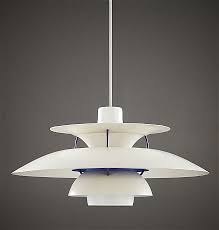

The PH-lamps are a series of light fixtures designed by Danish designer and writer Poul Henningsen from 1926 onwards.
The lamp is designed with multiple concentric shades to eliminate visual glare, only emitting reflected light, obscuring the light source.
